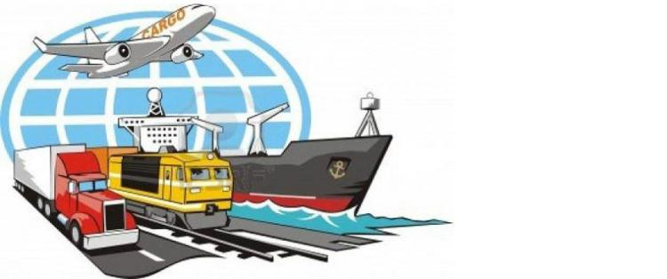
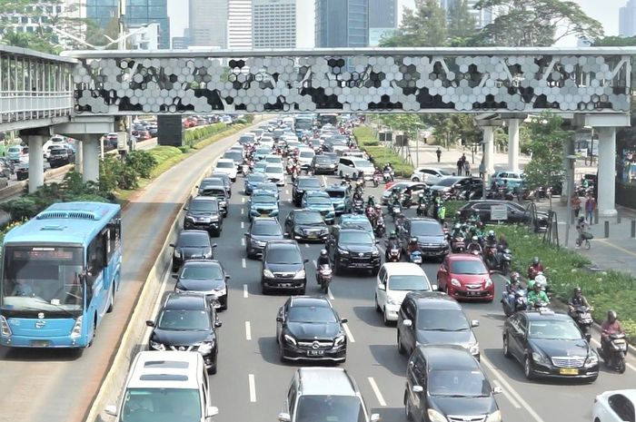

PENGARUH PERKEMBANGAN TEKNOLOGI TRANSPORTASI TERHADAP KEHIDUPAN MANUSIA
Transportasi digunakan untuk memudahkan manusia dalam melakukan aktivitas sehari-hari. Di negara maju, mereka biasanya menggunakan kereta bawah tanah (subway) dan taksi. Penduduk disana jarang yang mempunyai kendaraan pribadi karena mereka sebagian besar menggunakan angkutan umum sebagai transportasi mereka.
Baca Selengkapnya

Penggunaan Teknologi di Transportasi Tunjang Pembangunan Berkelanjutan
Transportasi tidak hanya digunakan untuk saat ini namun harus ada keberlanjutan di masa depan, oleh karenanya penggunaan teknologi di sektor transportasi menjadi penunjang terwujudnya pembangunan yang berkelanjutan (sustainable).
Baca Selengkapnya